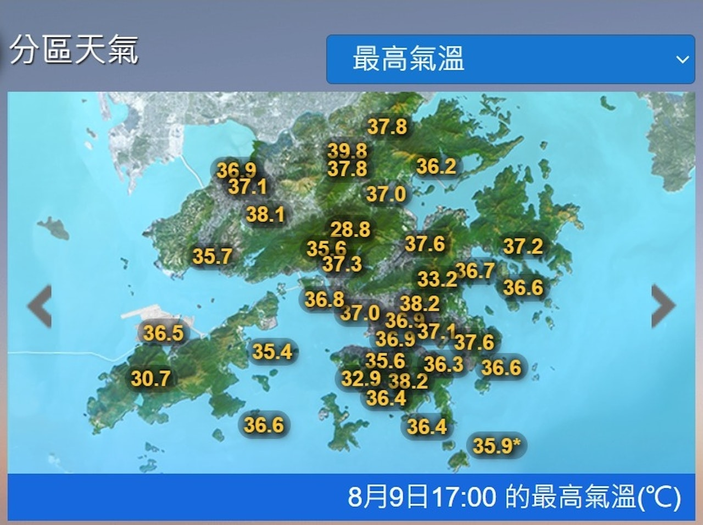

香港究竟有幾熱？氣溫之外，還有另一套衡量標準


2026年8月，香港經歷了一場破紀錄的極端熱浪。8月9日，香港天文台總部錄得 36.9°C ，打破了 2017 年颱風「天鴿」前夕創下的 36.6°C 紀錄，成為香港自 1884 年有官方氣象記錄以來最熱的一天。
8月9日17:00 各區最高氣溫（°C）

8月9日17:00 各區最高氣溫（°C）
2026年8月與2023年7月並列全球最熱月份
全球每月平均近地面氣溫，°C，1940–2026
來源：哥白尼氣候變化服務局（C3S），ERA5 · 製圖：＿＿＿
某一年的同一天 該日歷史最高 2026 年
而這只是全球極端天氣頻發的其中一個縮影，世界氣象組織（WMO）及歐盟哥白尼氣候變化服務局證實，2026年8月與2023年7月並列成為全球有記錄以來最熱的一個月。
01氣溫紀錄能否完全回答：香港究竟有多熱？
（專家表示，待替換）天氣預報中的氣溫，測量的是空氣本身的溫度。它不會單獨告訴我們汗水能不能順利蒸發、身體吸收了多少太陽輻射，或者周圍的風能不能幫助散熱。
而這些，恰恰是人體面對炎熱環境時的重要變量。
天氣炎熱時，人體透過出汗散熱，但汗水流出來，並不代表降溫已經完成，汗水從皮膚表面蒸發，才能透過這一過程帶走熱量。同時濕度影響著這個過程。在其他條件相近時，空氣較乾燥，汗水更容易蒸發；空氣越潮濕，蒸發就越慢，身體也越難借此散熱。
熱量進得多、散得少，身體就會積熱
人體熱量收支示意：紅色＝熱量流進身體，藍色＝熱量流出身體
遠足時，身體還會隨著運動不斷產生熱量。如果散熱趕不上身體產熱和從周圍環境吸收熱量的速度，熱量便會在體內積聚，增加發生熱相關疾病的風險。(cdc.gov)
8月8日下午約3時30分，一名7歲女童在南大嶼郊遊徑遠足時出現嘔吐，隨後由直升機送往律敦治醫院救治。同一時刻，昂坪氣象站錄得氣溫31.6℃。
31.6℃ 之所以能引發嚴重中暑，核心在於氣溫計忽視了另一個致命的气象變量——相對濕度，以及由此導致的體溫調節機制衰竭。
對於戶外活動者而言，氣象站測得的「乾球溫度」（Dry-bulb Temperature），僅僅代表遮陽百葉箱內純粹的空氣溫度，無法真實反映人體在暴露環境下的生理熱應力（Thermal Stress）。（考慮一下是否保留）
醫學與生理學研究指出，人體在進行遠足等戶外運動時，約 70% 的散熱需依賴汗液蒸發帶走潛熱。然而，汗液的蒸發速率並不取決於體溫，而是嚴格受制於周圍空氣的水蒸氣壓差。當相對濕度上升時，空氣吸收水分的飽和度降低，蒸發散熱效率呈指數級下降。
香港一年約有一半日子，日均相對濕度達 80% 或以上
天文台總部每日平均相對濕度，%。2024 年有 0 天達 80% 或以上（1996–2025 年平均每年約 169 天）
低於 70%70–79%80–89%90% 或以上
在香港典型的夏季高濕環境下，平均相對濕度約為 80%，約一半夏日的日均濕度達 80% 或以上。當空氣接近飽和，皮膚表面的汗液便無法揮發，形成「只流不乾」的物理屏障。此時，人體最核心的冷卻機制宣告癱瘓，內源性熱量開始在體內迅速積聚（Heat Accumulation）。
事發當日，昂坪氣象站雖錄得 31.6℃ 的氣溫，但配合高濕度、強太陽輻射（黑球溫度）與山谷低風速，綜合環境熱負荷早已跨過人體生理承受的危急紅線。
這也解釋了為何單純依靠「氣溫」無法評估真實的酷熱風險。要量化這種濕熱環境對人體的真實衝擊，必須引入更綜合的監測指標。
02香港暑熱指數（HKHI）
為綜合反映高濕與高溫對人體的綜合熱應力，香港天文台參考濕球黑球溫度 (Wet Bulb Globe Temperature, WBGT)，結合本地氣象觀測與入院數據，開發出專門的香港暑熱指數（HKHI）。
什麼是香港暑熱指數（HKHI）？
與僅測量空氣溫度的乾球氣溫不同，香港暑熱指數（HKHI）將測量焦點轉向了決定人體生理散熱極限的物理因子
香港暑熱指數（HKHI）是怎麼計算的
香港暑熱指數（HKHI）三項讀數的權重，%
自然濕球溫度反映濕度和空氣流動等因素對蒸發條件的影響。
Tnw × 0.80
透過包裹濕布的感應器，模擬在當前空氣濕度與風速下，人體皮膚表面汗液蒸發的冷卻極限。由於高濕度會顯著降低蒸發效率，濕球溫度直接反映了人體能否透過排汗實現有效散熱。
相片：Morn／Wikimedia Commons（CC0）
黑球溫度反映太陽及周圍環境帶來的輻射熱。
Tg × 0.05
透過放在表面塗黑的中空銅球內的感應器，模擬人體吸收太陽直射以及高樓、地面反射的輻射熱，量化環境對人體的熱積累負荷。
相片：Maleahlbr／Wikimedia Commons（CC0）
乾球氣溫一般所說的空氣溫度。
Ta × 0.15
常規氣象站測得的環境空氣溫度。
相片：NOAA Climate.gov
不同測算方式指標構成對比
濕球溫度 黑球溫度 乾球溫度 · 每格 = 10%
| 指標類型 | 測量與計算因子 | 局限性與適用場景 |
|---|---|---|
| 傳統氣溫（Dry-Bulb Temp） | 僅測量百葉箱內的空氣濕度 |
忽略濕度、風速和太陽輻射，無法反映真實人體熱應力 |
| 濕球黑球溫度（WBGT） | 70% 濕球溫度+ 20% 黑球溫度+ 10% 乾球溫度WBGT = 0.7 Tnw + 0.2 Tg + 0.1 Ta |
被廣泛採用為國際勞工與運動領域的熱壓力評估標準，並具有明確的臨床防護意義， |
| 香港暑熱指數（HKHI） | 80% 濕球溫度+ 5% 黑球溫度+ 15% 乾球温度HKHI = 0.80 Tnw + 0.05 Tg + 0.15 Ta |
專門針對高濕度、高密度的都市與野外環境 |
XXX專家表示（待替換）三個讀數在公式中的分量並不相同。 HKHI的自然濕球溫度係數為0.80，高於戶外有日照條件下WBGT公式中的0.70。這組權重來自對本地氣象觀測與入院數據的分析，而不是對人體散熱方式所佔比例的劃分。
HKHI 之所以比普通氣溫更準，是因為它直接抓住了人體中暑的兩大主因：空氣太濕導致汗水蒸發不了，以及日光直射帶來的輻射熱積累。
因此，當香港暑熱指數達到 30 或以上時，天文台就會發出工作暑熱警告。此時，即使實際氣溫只有 31°C 或 32°C，人體的熱應力風險也已經達到了危險級別。
（衛生專家XXX，待替換）特別提醒，兒童、長者以及未經過熱適應訓練的戶外活動者，體溫調節能力顯著弱於常人。在「高濕低風」的山野環境中，即便體溫計顯示的氣溫僅有 31°C 左右，只要感覺皮膚持續濕熱且伴有頭暈或嘔吐感，即表明身體已跨過安全紅線，必須立即停止前進，尋找陰涼通風處補充電解質並尋求救援。
03測測你在不同情況下會面臨怎樣的熱風險？

在下方輸入環境氣象條件與活動強度，即可實時估算香港暑熱指數（HKHI），並獲得對應的熱應力安全等級
04香港究竟有多熱？
回到文章開頭那個問題：同樣是30多度，為什麼有些地方讓人更難受？
原因在於香港的高溫經常伴隨高濕。濕度越高，汗液越難蒸發，人體最主要的散熱機制因此受限；再加上日照、風速和活動強度的共同作用，實際熱負荷遠比一個氣溫數字複雜。
溫度計量的是空氣，而我們真正感受到的，是身體能不能把熱散出去。這正是WBGT、HKHI這類綜合指數存在的原因——它們試圖回答氣溫本身回答不了的問題。